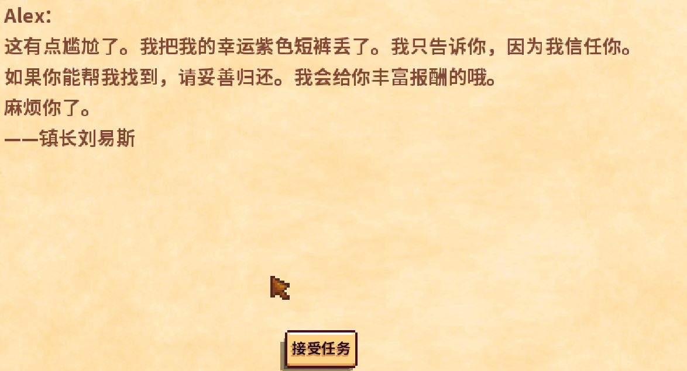

Quick answers (read this first)
- Your starter cat or dog can be petted daily—click it when you are close.
- Sleep by interacting with your bed. That ends the day and restores energy.
- Stay awake until 2:00am and you pass out—gold penalty, wake at home.
- Mail quests are often optional side stories—accept when curious, finish later.
- Early sleep beats heroic overtime after Exhausted fishing.
Who this is for (and who should skip)
Use this if you keep missing sleep, wonder whether the pet matters, or feel forced to finish every letter quest the same day.
Skip or skim if bed, mail, and pet clicks are already automatic.
Version note (Stardew Valley 1.6): Pet friendship and sleep mechanics are unchanged. QoL tweaks make bed interaction smoother on some platforms. Pet rewards accumulate over time—we avoid inventing exact day counts. Pet when you see the animal; sleep before 2:00am.
From our Year 1 save (real pitfalls): pet the cat or dog daily—it is a tiny win that adds up. Sleep before 2:00am on purpose; pass-outs cost gold. Optional quests like Lewis’s shorts are FOMO, not emergencies—finish them when crops and energy allow.
Pros & cons of strict sleep discipline
| Details | |
|---|---|
| Pros | Full energy mornings; fewer gold penalties from pass-outs; less frustration spiral; easier to stick to a morning routine. |
| Cons | You miss late-night museum runs or one more fishing cast—usually fine in Year 1. |
| Use when | You fainted twice this week or keep waking with half energy. |
| Skip when | You are already home by 10–11pm naturally without thinking. |
Sleep style comparison: early bird vs night owl vs quest collector
| Style | Best for | Watch out for |
|---|---|---|
| Early bird (home by 7–8pm) | Recovery days, low food, new players | Less town time—but town is there tomorrow |
| Structured (home by midnight) | Balanced Year 1 runs | One more task syndrome near 1am |
| Quest collector (weekend side days) | Flavor quests like screenshot 51 | Do not derail crop weeks for jokes |
| Pet-first mornings | Players who forget the cat | Remember to water crops before long trips |
Personal tips from our Year 1 save
Photo 20 shows the goal: bed before the 2am collapse. The mayor quests shown in Photo 51 are optional—we completed them on rainy afternoons when crops did not need watering. On hard days, photo 48’s social time cost no energy. We moved petting to mornings: cat, mail, water.
Interactive checklist
Tick as you play. Saved in this browser only.
Safe to skip (anti-FOMO)
- Finishing every help-me-find-X quest the same day.
- Staying out for one more cast at 1:40am.
- Feeling guilty about the pet if you missed a day—resume tomorrow.
- Perfect bedtime every single night—aim for consistency, not shame.
Decision table: sleep now or push?
| Clock / state | Do this | Avoid |
|---|---|---|
| Evening + low energy | Home → bed | New mine floor |
| Near 2:00am outdoors | Sprint home if close; else accept pass-out | Starting fishing minigame |
| Optional letter quest | Accept / ignore; schedule later | Derailing seed money week |
| Pet visible at door | Click pet, then chores | Ignoring it forever |
| Exhausted + far from farm | Walk slowly; eat if you have food | Pickaxe spam on rocks |
Real screenshots from our Year 1 save

Game screenshot © ConcernedApe — used for guide commentary

Game screenshot © ConcernedApe — used for guide commentary

Game screenshot © ConcernedApe — used for guide commentary
How to end the day cleanly (operations)
- Check the clock mid-evening. Low energy? Head home—no new mine floors.
- Ship extras; chest maybes. Free inventory for tomorrow.
- Pet the cat or dog if visible. One click at the door.
- Click the bed; confirm Yes. Close open menus first if interaction fails.
- Wait through the transition. If already lying down, let the day roll.
- Click through shipping summary and level-ups.
- Next morning: mail → water (sunny) → one goal.
- If you pass out, note why. Earlier bed or snack on the hotbar tomorrow.
Common mistakes
- Standing next to the bed waiting for a prompt that already fired. If you are lying down, the sleep sequence started. Wait for the day to roll instead of clicking randomly.
- Tool-swinging at zero energy outdoors. You cannot work when Exhausted—you faint. Walk toward home or accept the pass-out. Do not dig one more tile.
- Treating every quest as main story. Many letters are optional flavor. Crops and energy come first; jokes can wait for rain.
- Never petting the starter animal. It is a tiny daily win that builds friendship over time. Include it in your morning or evening loop.
- Ignoring open menus before bed. Shop windows and dialogue boxes block bed interaction. Close menus first, then sleep.
Alternative variations
- Early bird: Home by 7–8pm every night. Less adventure time, but mornings always feel strong.
- Quest collector: Reserve one weekend day per season for side quests only—after chores, with food packed.
- Pet-first mornings: Pet → mail → water → leave. Evening sleep stays the same; pet never gets skipped.
FAQ
Why didn’t the sleep prompt appear?
You may already be in bed, or you need to click the bed again while facing it. Open menus can also block interaction—close them first. On some controllers, confirm you are targeting the bed tile, not the wall.
Is passing out bad?
It costs gold and feels annoying, but it is not a save wipe. You wake at home. Still better to sleep on purpose so you control the timing and avoid the penalty when possible.
Must I finish Lewis’s shorts quest immediately?
No. It can wait until friendship and map access make it easy. Optional quests do not block crop seasons or story progress.
Does the pet do anything besides look cute?
Petting builds friendship over time. Exact rewards vary—we focus on the habit, not min-maxing friendship meters on day three.
What if I need to leave the house after getting in bed?
You can cancel before confirming sleep. Once you confirm Yes, the day ends. Sort inventory and check the clock before clicking bed.
Next steps / related pages
Unofficial fan guide. Not affiliated with ConcernedApe.